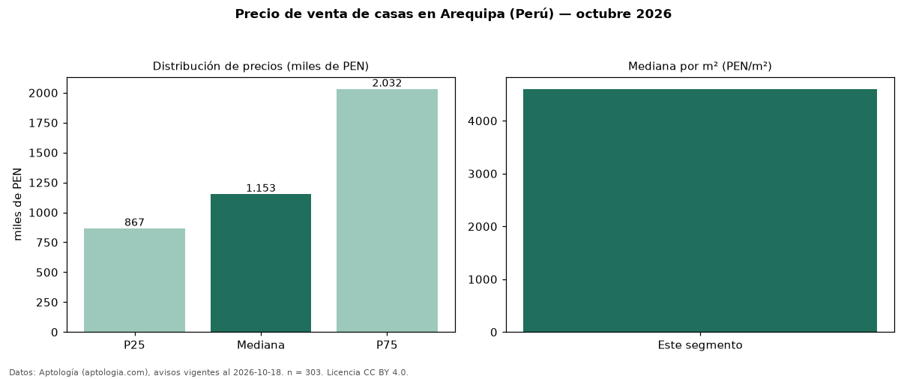

Precio de venta de casas en Arequipa (Perú) — octubre 2026
Con 303 avisos vigentes, el precio mediano de casas en venta en Arequipa (Perú) es PEN 1,15 millones. Por metro cuadrado, la mediana es PEN 4.602/m² (n = 296 avisos con área). Por precio mediano es la ciudad 2 de 3 de Perú con al menos 30 avisos de casas en venta (PEN). Tiene 4 distritos con al menos 30 avisos de casas en venta; la más cara es Cerro Colorado (PEN 2,03 millones) y la más económica Sachaca (PEN 999.661). La mediana de toda la vivienda en venta de Arequipa (PEN) es PEN 635.250; las casas quedan +82 %. El área mediana anunciada es 258 m². El segmento con más oferta es el de 3 o más habitaciones (277 avisos, mediana PEN 1,15 millones). La mitad central de los avisos va de PEN 866.750 a PEN 2,03 millones (razón 2,3), una dispersión alta. Datos: Aptología (aptologia.com), CC BY 4.0 — https://www.aptologia.com/pe/venta/arequipa. Archivos: PDF, CSV con las cifras y gráfica PNG.

| Avisos únicos | 303 |
|---|---|
| Percentil 25 | COP 866.750 |
| Mediana | COP 1.153.200 |
| Percentil 75 | COP 2.031.500 |
| Mediana por m² | COP 4.602 |
Fuente: avisos vigentes de portales inmobiliarios recopilados por Aptología, deduplicados (mínimo 30 avisos únicos por celda). Precios pedidos, no cerrados. Fecha: 2026-10-18.